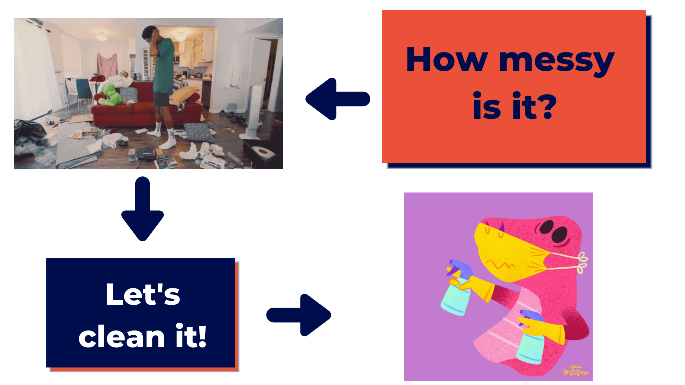
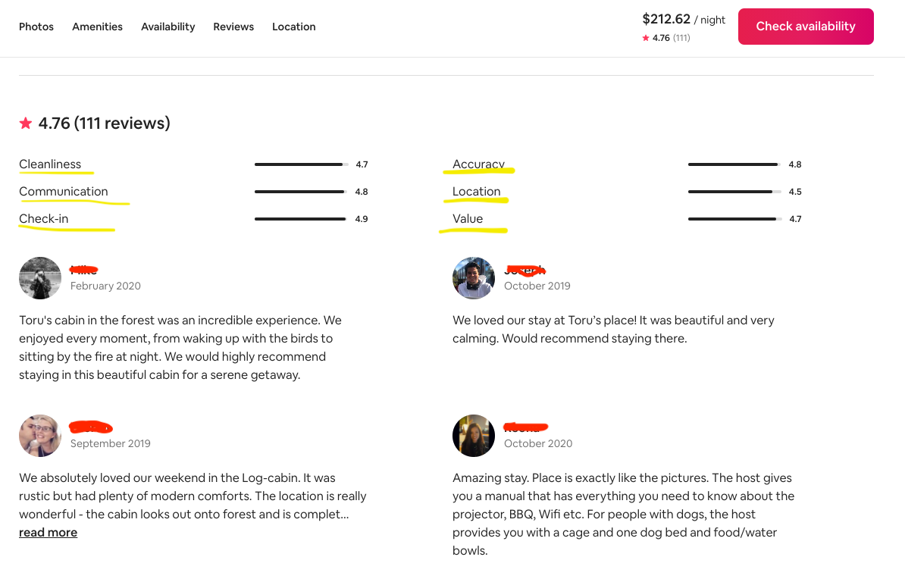

10 clean it Copy1
01 Cleaning Data¶
"There are only two forces in the world,
the sworddirty data andthe spiritclean data. In the long run thesworddirty data might (not) always be conquered by thespiritclean data." ~ Napoleon CleanYourData
Outline for this Lesson¶
- Structured vs Unstructured Data
- What is a Data Cleaning?
- What is a dask dataframe? üêº
- Data Cleaning
- Test Your Understanding
1. Structured vs Unstructured Data¶
2. What is a Data Cleaning?¶
Wikipedia has a beatiful definition of data cleaning, which was in turned modified from a paper from Shaomin Wu titled, "A Review on Coarse Warranty Data and Analysis" (see citation below).
"Data cleansing or data cleaning is the process of detecting and correcting (or removing) corrupt or inaccurate records from a record set, table, or database and refers to identifying incomplete, incorrect, inaccurate or irrelevant parts of the data and then replacing, modifying, or deleting the dirty or coarse data." ~ Wikipedia & Shaomin Wu
When we first encounter messy data, we usually go through a non-exhaustive checklist and/or use some rules of thumbs to identify, tackle, and repeat, each mess from the messy pile of data we have. Some of the items in our checklist might be:
- Do we have column names?
- Are the column names normalised? (e.g. lower case with no spaces and/or numbers in them)
- Do we have dates? If so,
- how are these represented?
- Do we have different formats in different rows? (e.g. 31-Oct-2020, October, 31st 2020, ...)
- Do they have the time in them or is this in a separate column?
- Are there different data structures within an element of an observation? (e.g. do we have lists with lists in them inside the value of a row and column combinantion)
- If we have numerical data points representing a monetary value, which denomination are these in?
- How was the data generated?
- Do we have any missing values? if so,
- Are they missing at random?
- Are they missing by accident? (e.g. was it due to an error during the data collection process)
- Are they intentionally empty? (e.g. think of a conditional question in a survey, if the participant answered yes to the previous question, use this one next, if not, skip 3 questions)
- Are there any outliers in our dataset? if so,
- Are these true outliers? (e.g. finding the salary of Jeff Bezos in a list with the income of all of the people from the state of Washington)
- Are these mistakes? (e.g. finding negative prices for the price of bread)
- Are there any duplicate observations/samples in our dataset?
All of this questions get tackled in a data format described by Hadley Wickham in a paper by the same name as the data format, called "Tidy Data". In his paper, Hadley describes Tidy Data as:
"Tidy datasets are easy to manipulate, model and visualise, and have a specific structure: each variable is a column, each observation is a row, and each type of observational unit is a table." ~ Hadley Wickham
While our datasets might not contain all of the issues described in Tidy Data that might come un in messy datasets, the strategies and concepts outlined in it will prove useful in many cases you might encounter throughout your career so I highly recommend that you read it at some point.
One last thing about data cleaning, it is not a one time thing during the data analytics cycle but quite the opposite, you might find yourself going back to the data cleaning process 2 or more times as your understanding of the data increases during the same project.
03 What is a dask dataframe?¶
In essence, a ton of lazy pandas!

Dask dataframes are lot of pandas dataframes that are lazily evaluated and throughout a session
4. Data Cleaning¶
We will add our data directory to a variable to make sure we always have it at our disposal.
Note: Make sure you change all of the forward slashes / into back slashes \ if you are using Windows.
Let's begin by checking out one of the files we downloaded from Belgium. We will first add the path to a variable and then use the .read_csv() method of dask dataframe. Most of dask dataframe's API mirrors in great detail the pandas API, which means that the .read_csv() we used in the last lesson will work almost identically in the example below using dask.
4.1 Reading Data with Dask¶
Notice how the data was displayed very differently than with pandas, this is because dask does not read the data into memory until it needs it, instead, - it creates different partitions (64MB/partition by default) of the data based on the amount of files we have and the size of each, - it reads a small fraction of the data to - infer the data type of each column and - initialise a directed acyclic graph (DAG) where each computation we do on our dataframe will happen sequentially, and, were possible, in parallel.
"A graph is formed by vertices and by edges connecting pairs of vertices, where the vertices can be any kind of object that is connected in pairs by edges. In the case of a directed graph, each edge has an orientation, from one vertex to another vertex. A path in a directed graph is a sequence of edges having the property that the ending vertex of each edge in the sequence is the same as the starting vertex of the next edge in the sequence; a path forms a cycle if the starting vertex of its first edge equals the ending vertex of its last edge. A directed acyclic graph is a directed graph that has no cycles." ~ Wikipedia
Example of a DAG:

If you remember the glob module from the last notebook you might have noticed that we did the same to read in all of the files from Belgium. Dask gives us the same ability to retrieve multiple files, in multiple directories, recursively.
Without even examining the data we can already expect to have files with different columns depending on when the scraping took place and what kind of data was available at that time. Let's now have a look at the columns we have.
Wow! That's a of variables to play with and a lot of columns to go over. Let's now examine the first few rows of our file with the .head() method.
The reason we got an error while trying to read in the data was probably because don't have the same columns in all of the files, and/or because we don't have the same data types in each variable and dask doesn't know what to do or make of them. What we will do to work around this is to grab all of the columns in our files for each country, and select only the ones in common to all.
Let's create a function to get the columns in our datasets. We will use pandas again and then delayed the function using dask.delayed.
We need all of our CSV files so we will grab them using the same glob method from before. Notice that we now have multiple * because we need to go through each country CSV folder.
We will now iterate over each of our files, apply dask delayed to our function as we read the files, and then append the delayed objects to a list called all_cols.
Notice the delayed objects inside our list as well as the amount of time it took to create them. Since dask has not compute them yet, it too essentially no time collect the delayed instructions. Let's now apply the dask compute method to each delayed object in our list.
Awesome! It only took a few seconds to grab the columns of each file so we ended up saving ourselves a lot of time. Imagine what it would have taken us to check the columns of every dataset 1 by 1?

Exercise 1¶
-
Get the length of each list of columns with a delayed object and add it to a list.
-
Calculate the average amount of columns from such list.
Answers below! Don't peak üëÄ
The next step we will take is to gather all columns in common in our data sample. To do this, we will first import the reduce function from the standard library called functools. We will then create an anonymous lambda function that takes a set x and a set y and then grabs the intersecting columns starting at x and reducing the set by all ys. This way, we will make sure we grab only the columns in common within all of our files.
In case you come back to this notebook later on and you want to try using different countries, you could convert the output of the previous cells we have run into a pandas dataframe, and filter out the files without the specific variables you need or want.
Here is an example of how to check whether any of the files we will use does not have 106 columns.
Since the reduce function is lazy by default, meaning, no computation will take place until we neet its output, we will wrap our reduce function in a list function so that it returns the output immediately.
Let's check out how many columns we have in common for all of our files.
Time to help dask help us even further. Comma Separated Values tend to be quite messy, especially when they have a multiple columns with many quotations and commas. When this happens, one or more can easily find its way into the wrong spot.
To start things off we will read in the data with all columns as strings (or python objects). The reason behind this is that the way dask reads and interprets the data that goes into a dataframe, is by selecting a small sample of rows from all columns and inferring from them the data type that might be available in it. You can already imagine that with columns with many valid elements such date, unique identifiers for purchases, etc., some are bound to miss the mark and thus be evaluated incorrectly. In essence, we will read everything in as a string and work our way through each column to fix or get rid of any of the many missing values we might have.
Let the Cleaning Begin¶
We now finally read in our data and can begin the cleaning process.

Just like the function compute starts a computation for us, the .head() and .tail() of a dataframe will proceed to compute those operations on the fly. Hence, if we are dealing with massive amount of data, we might experience some lenghty wait times. Be cautious!
4.2 Dealing with Duplicates¶
Since we are expecting to have quite a few duplicates from the get go due to the scraping tool periodically grabing whatever listings are available in a country at x time intervals, we will tackle this at the very beginning
Let's now check out how even our partitions may or may not be. We will do so with using the dask.dataframe function called map_partitions. Remember that our dask dataframe is a combination of many lazy pandas, this means that maping a function to a partition will be the same as applying a function to a full pandas dataframe. Hence, our len function will give us the number of rows in each partition.
Note that since we are calling compute on our function, this might take a few seconds to be processed.
Since our partitions are way too uneven, we will repartition our dataset using the dask.dataframe method .repartition(). This method takes in several arguments and the most useful ones to use are repartition, which takes in a number of partition and tries to allocate rows accordingly, and partition_size which takes in a string with the size and type and then reallocates rows accordingly. The latter is a bit tricky because it triggers a computation, while the former follows the typical lazy evaluation. We will repartition as size to get a more even result right of the bat.
Notice that because we are now creating a DAG, we will be assigning our dataframes computations each to a new variable.
For example sake, let's check one more time the length of each partition now that we have reallocated the rows to a more evenlt-distributed way.
Nice! Our partitions look way more even now.
We will start by selecting a few thresholds.
- For columns that have less than 5% of their values missing, we will drop these rows.
- For columns that have an amount of missing values between 5% exclusive, and 50% exclusive, we will see how we can fix these.
- For columns that have an amount of missing values greater than or equal to 50%, we will drop these columns.
Notice that our missing_count_pct is a pandas series and the column names of our dataframe represent the index of our series. This means that we can create a mask with a percentage condition, and use the .index attribute from pandas to select the names of the columns.
Note that since our we already computed this operation, our pandas series of missing percentages lives in memory. Hence, we do not need to call compute again.
Exercise 2¶
-
Create a list of the columns to drop. These columns should have more than or equal to 50% of missing values. Name this variable
cols_to_drop. -
Create a list of columns to fix. These columns should have between 5% and 50% of missing values (exclusive of these two numbers). Name this new variable
fix_these_columns.
Answers below! Don't cheat üëÄ
Now, let's go ahead and remove the columns we would like to drop because they have more than half of their values missing.
We can visualize what we have done so far with our many dataframes by calling the visualize method on ddf3.
By passing the fix_these_columns list to our dataframe and calling the .head() method we can evaluate the data types available in each of the columns that are left to clean.
Since we don't know the real reason for the missing values in the non-numerical colums, (for example, transit might be empty because the location is geniuinly away from any trafic whatsoever or the house might have no strict rules at all ü§∑üèª) we will select these columns manually, add them to a list, and fill in any missing values using the word "Unknown". We will create this mapping of column names with the word "Unknown" with the help of a dictionary comprehension again and pass it to the dask dataframe method called .fillna().
Let's get the rest of the variables we need to fix by taking the set difference between the non_numerical_vars list and the fix_these_columns list.
Convert all dates to datetime
If an observation has comments but no first in last out date range, use the day they became a host as a proxy and the date that observation was last scraped
To finish up with reviews, we will fill in the first and last review vars with the date in the host_since variaable
We will take out the dates varaibles for now as we will have to deal with these in a different manner later on.
Let's examine the values of what we have left.
Note: Remember, that it is not advisable to call .head() or .tail() too often because depending on the size of the data, it could take quite some time for the operation to be processed. We are using it here for illustrative purposes only.
Sometimes we do have to take care of things manually so we will start by dealing with all of the columns that have a currency sign in them regardless if they have missing values or not. Because we only want the digits and the periods, we will import digits from the string module in Python, and add to it the ..
For our cleaning currency function, we will pass in a value from a column, check whether it is a string or something else, and strip out anything that is not a number or a ..
Since we should always test our functions, let's make sure it does return numbers the way we need them.
We can also check that the values can be converted to float without any issues.
Using the deafaultdict method from the collections module, we will iterate over our numerical columns while cleaning the numbers up a bit.
Because we created a dictionary with the column names as the keys and dask series as the values, we can call the keys method on the dictionary while wrapping it inside a list whitin the .drop() method and then assign the dictionary back into the the dataframe.
Notice the ** in the operation above. This is one of the many convenient features Python has as a programming language. The double star allows us to unpack key-value pairs from a dictionary and saves us from having to extract extract every pair manually or in a loop. You will often see operations like these ones being referred to as **kwargs.
We successfully implemented our method and can see that not only the new columns have been added to the end of our dataframe but also that the data type for these columns has changed to float32, which is a smaller in size data type than the Python default float64.
As you can see, our DAG is becoming bigger and bigger with every operation we make. Because of this, our session might become a bit sluggish and time consuming as we progress and try to compute calculations since dask will have to do all of the steps from reading the data to our latest operation. To avoid this, we can save part of the our operations' state with the .persist() method of dask. That way, when we need to compute something on the fly, dask won't have to start from scratch.
No that we went down the path of assigning the proper data type to some of our variables, let's go ahead and do it for all of them. Here are two lists separating the floats from the integer columns. We will use a similar approach to recode them.
We will create another default dictionary with a dask.dataframe.Series as its default data type, and call it dict_numerical_cols. We will then iterate over the columns from both lists of ints and float, apply our remove_puncs() func using the .apply() method, and then change the data types respectively.
We will now drop the the old columns from our dataframe and assign the new ones back in.
Now that we have made some great progress fixing some of the inconsistencies in our data, let' finish dealing with the missing values. Here is the list of missing values we still need to fix, minus the first_review and last_review variables.
Before we deal with these vars, we want to first figure out how to get rid of duplicates
Exercise 3¶
- What do you think will happen once we get rid of duplicates, will we have more missing values as a percentage of the total or less?
Hint: This is a trick question!
Let's start with security deposit . We will assume that if a value is missing, the listing doesn't requie a deposit
Let's look at the distribution of the variables we have left
Let's now talk about reviews
These seem to be standardize across Airbnb so we can evaluate them in combination

Awesome, we just comfirmed that indeed, these missing values are not missing because of mistakes or issues, but simply because these listings have not received a single review. This means we can go ahead and fill them up with 0s.
You would think that people depend heavily on their reputation for this business, hence reviews must be closely tied to host_response_rate, or so we will think for this case.
We will fill in the missing values with a
Let's fix the cleaning fee now
We are going to assume that a basket of goods in Japan, Belgium, and South Africa won't differ significantly --although this might be very skewed-- and first convert the prices and their different denominations into 'USD', and then compare the median and average cleaning fee per room type.
The code above is equivalent to creating a chain of lazy variables that build the operation we want one step at a time. Here is an example of another implementation.
Let's reacap what we have done now that we have a nicely clean dataset
Get the datatypes and save them.
Let's go over, and create, some of the columns that could be useful for our analysis
Final price per stay